Professor Werner Dietl, Fall 2018
Intro
software architecture: set of principal design decisions about the system, blueprint for software construction and evolution. It has 3 aspects: structure/behaviour/interaction of system, communication, non-functional requirements.
Non-functional requirements define the behaviour of a system (e.g. system should be fast and secure). Functional requirements define what a system is supposed to do (e.g. system should book me Fedbus tickets).
We want practical ways to guarantee that software is correct. The different ways that we can do this fall on a spectrum.
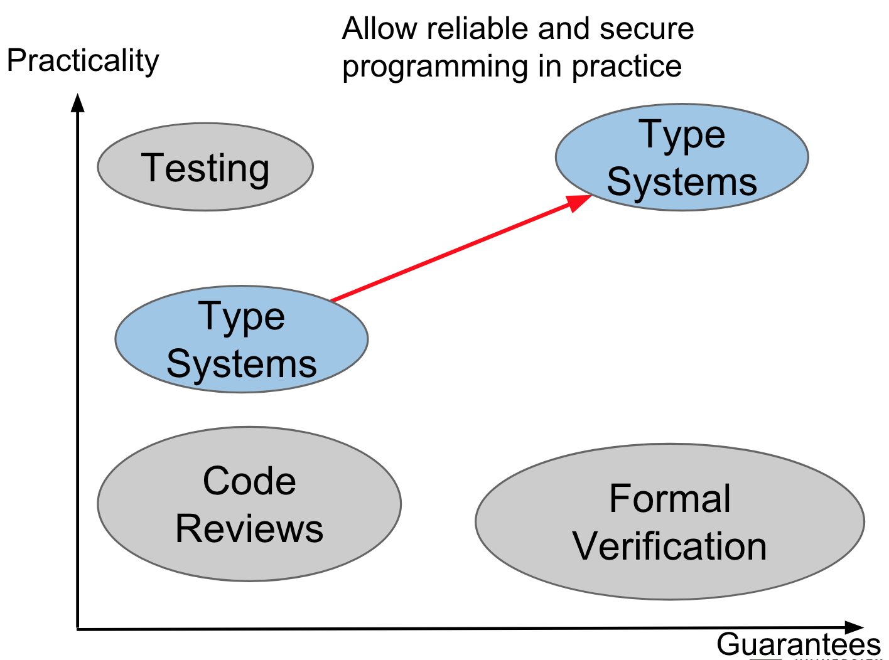
In the top right corners we have specialized type systems like Android’s SPARTA (Static Program Analysis for Reliable Trusted Apps) which guarantee no leakage of private information.
Something with high practicality but low guarantees would be crowd-sourced verification.
Another approach is MUSE (Mining and Understanding Software Enclaves). This program mines specifications from a code base continuously, automates finding/repairing program errors, and synthesizes new programs from the existing codebase using mined specifications. It’s composed of open source software projects.
Architecture
We choose a design based on the following factors (among others):
- fitness for purpose,
- cost of production (parts, labour, capital/tools)
- cost of operation
- fitness for future
Steps of the design process:
- Ideation
- Analysis: determine and apply criteria
- Selection of design
- Elaboration/Refinement
- Iteration
Radical components are components that haven’t been invented yet. Radical configurations are designs that haven’t been tried yet. As designers, we want to take radical problems (problems solvable with radical configurations/designs) and solve them with existing/standard/normal solutions.
All of architecture involves design, but not all of design involves architecture (i.e. art).
The same system can have multiple architectures i.e. logical web architecture (class diagrams) vs. physical web architecture (server map) vs. dynamic web architecture (realtime map of requests sent/received).
Stakeholders in a system’s architecture include: architects, developers, testers, managers, customers, users, and vendors. These people define the goals of the system and then make principal architecture decisions that achieve those goals.
prescriptive architecture: design decisions made prior to the system’s construction, as-intended design
descriptive architecture: describes how the system has been built, as-implemented architecture
architectural evolution: when a system needs to be changed. Ideally we would go back to modify a system’s prescriptive architecture (i.e. change the overall design of the system to fit). In practice, the descriptive architecture (the system) is directly modified. This happens because of: developer sloppiness, short deadlines, lack of documented prescriptive architecture, need/desire for code optimizations, inadequate techniques or tool support.
architectural degradation: introduction of principal design decisions into a system that don’t violate the original prescriptive architecture
architectural erosion: introduction of architectural design decisions into a system that violate the original prescriptive architecture
architectural recovery: process of determining a system’s architecture from its implementation artificats e.g. source code, executable files, bytecode. Used to recover architecture from architectural degradation/erosion.
A software architecture should be a composition of multiple interacting elements. There are 3 types of elements: processing, data/state, interaction.
components: software elements that encapsulate processing and data. They perform data hiding, have an interface, and has explicitly defined dependencies e.g. a software class. They provide application services.
connectors: interaction effects and regulates interactions among components e.g. procedure call connectors, shared memory connectors, message passing connectors, streaming connectors, distribution connectors, wrapper/adapter connectors. They provide application specific independent interaction facilities.
configuration: topology of components and connectors in a system’s architecture
The deployment view of an architecture is the description of how that architecture has been physically placed on hardware. We can assess it through its available memory, power consumption, and required network bandwidth.
Building software is hard because:
- It’s a young field
- There are high user expectations
- Software relies on software relies on hardware
- Complexity increases non-linearly with program size
- Conformity, system state depends on its environment
- Changeability, software is too easily modified
- Intangibility, follows no laws
Ways we can make it less hard:
- High level languages
- Development tools and environments
- Component based reuse
- Development strategies
- Incremental, iterative method
- Waterfall: requirements to design to implementation to verification to maintenance
- Evolutionary prototyping: build robust prototype and refine it so that users can have access to it before final system is created
- The spiral model, which examines the risks of a project and picks another development strategy that best fits the risk
- Emphasis on designing software before we implement it
Views and Non-functional Properties
Recall that architecture composes components and connectors. From a topological standpoint, we want to:
- minimize coupling (information hide between components)
- maximize cohesion within each component (each component is one logical service)
abstraction: remove unnecessary detail. You can abstract away control (e.g. do-while loop) and you can abstract away data types e.g interfaces.
decomposition: top-down abstraction where we break problem into independent components and we describe each component
Conway’s Law: The structure of a system reflects the structure of the organization that built it
architectural representations: technical communciation about a system between stakeholders, has properties: ambiguity, accuracy, and precision
Reading assignment: 4 + 1 View Model
A system has a logical view, a development view, a process view (runtime), and a physical view. Each is appropriate for some stakeholder and scenario.
architectural model: an artificat documenting some or all of the architectural design decisions about a system
architecture visualization: way of depicting some or all of the architectural design decisions about a system to a stakeholder
architecture view: subset of related architectural design decisions
component diagram: captures components and static relationships between components
sequence diagram: captures behaviour of system for a specific runtime scenario
deployment diagram: mapping between components and physical devices
statechart diagram: formal description of system behaviour through states, doesn’t map well to components
Classifications of non-functional properties:
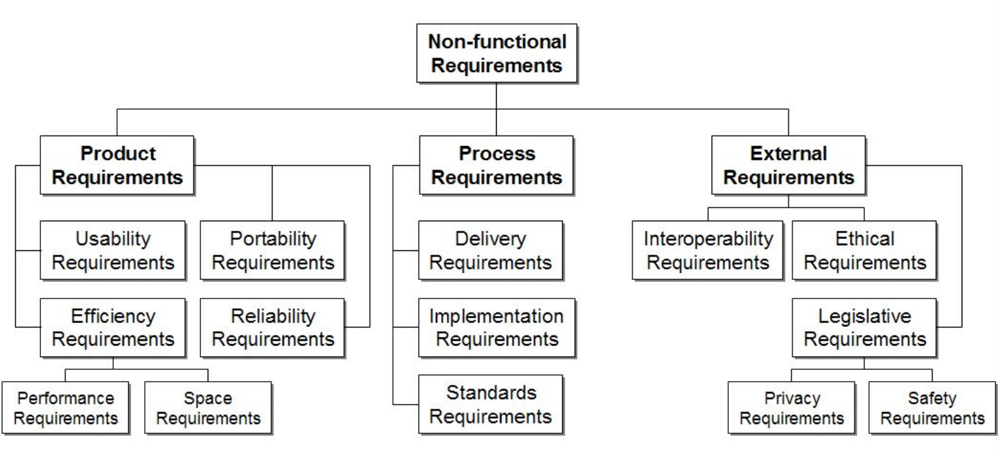
non-functional property (NFP): constraint on the way a system is implemented or delivers its functionality e.g. efficiency, scalability, evolvability, complexity, heterogenity, dependability
A system has to be designed for functional properties (FPs) to be correct and designed for NFPs to be usable. Each stakeholder has their own opinion on what NFPs matter most e.g. QA interested in testability more than sales, developers interested more about maintainability than customer.
Challenges to ensuring NFPs:
- Some are only partially understood by other stakeholders
- They can be qualitative rather than quantitative
- They frequently depend on many variables
- Non-technical pressures e.g. time-to-market of functional features
Design guidelines (not laws!) for ensuring NFPs:
-
Efficiency: system’s ability to meet performance requirements
- Components
- Keep them small
- Simple and compact interfaces
- Allow multiple interfaces to the same functionality
- Separate data from processing compoents
- Separate data from metadata
- Connectors
- Carefully select connectors
- Be careful of broadcast connectors
- Encourage async interaction
- Be wary of location/distribution transparency
- Topology
- Keep frequent collaborators close (e.g. in memory)
- Consider efficiency impact of selected style
- Components
-
Complexity: the size of a system, its volume of constituent elements, their internal structure, and their interdependencies
- Components:
- Separate concerns
- Isolate functionality from interaction
- Ensure cohesiveness
- Insulate processing from data format changes
- Connectors
- Isolate interaction from functionality
- Restrict interactions provided by each connector
- Topology
- Eliminate unnecessary dependencies
- Use hierarchical decomposition
- Components:
-
Scalability: capability of system to meet new size/scope requirements
Heterogeneity: ability of system to be compose of or execute in disparate parts
Portability: ability of system to execute on mulitple platforms while retaining FPs and NFPs of original
- Components
- Keep components focused
- Simplify interfaces
- Avoid unnecessary heterogeneity
- Distribute data sources
- Replicate data
- Connectors
- Use explicit connectors
- Use simplest connectors
- Topology
- Avoid bottlenecks
- Place data close to consumer
- Location transparency
- Components
-
Evolvability: ability to change to satisfy new requirements and environments
- Components
- Same as for complexity
- Isolate modifications to reduce risks
- Connectors
- Clearly define responsibilities
- Make connectors flexible
- Topology:
- Avoid implicit connectors
- Encourage location transparency
- Components
-
Dependability: ability of a system to respond to failures (from environment, components, connectors) to failures at runtime
Survivability: ability to resist, recover and adapt to threats (i.e. prevent future threats)
Safety: ability to avoid failures that will cause loss of life, injury, or loss of property
- Components
- Control external component dependencies
- Support reflection
- Support exception handling
- Connectors
- Use explicit connectors
- Provide interaction guarantees
- Topology
- Avoid single points of failure
- Enable back ups
- Support system health monitoring
- Support dynamic adaptation
- Components
Architectural Styles
We can classify ways to design software in terms of the scope of that design and the amount of domain specific knowledge that that design uses.
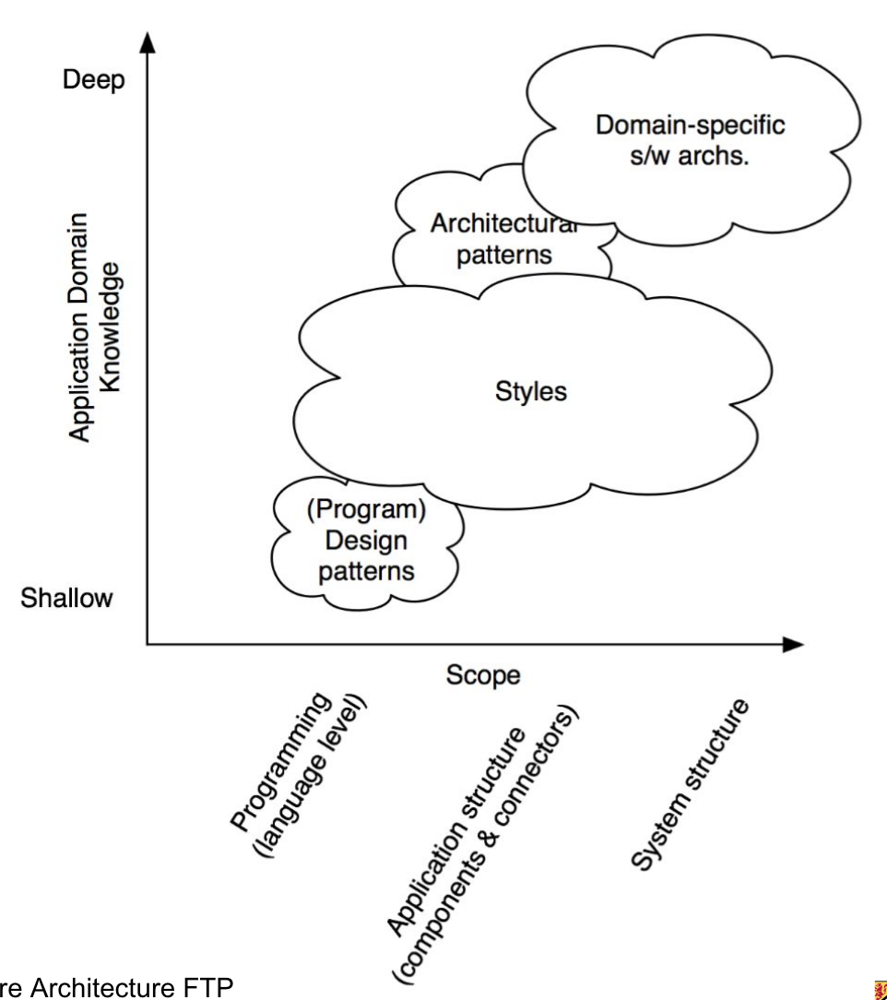
Reading assignment: Design vs Architecture Patterns
Archiecture design differs from design patterns int that:
- They talk about overall components rather than classes e.g. in layered architecture pattern, we talk about the presentation layer and the business layer rather than a Button class
- Design patterns only talk about one type of entity e.g. a Builder class, whereas architectural patterns can talk about many components e.g. in microkernel architecture, the core system component and the plugin component
- Architectural patterns have many variants and hybrids. For example, event driven architectures has a mediator variant (events passed through central mediator) and a broker variant (forwards requests).
- Architectural patterns operate at a higher level of abstraction, are scaffolding frameworks
Reading assignment: seL4: Formal verification of an OS kernel
Architectural Patterns
architectural pattern: set of architectrual design decisions that are applicable to a recurring design problem and parameterized to account for different contexts in which that problem appears
Three Tiered Pattern
Front tier: contains user interface functionality
Middle tier: contains applications major functionality
Back tier: contains application’s data access and storage functionality
MVC
3 components
- Model for core functionality and data
- Views for displaying information to user
- Controllers for handling user input
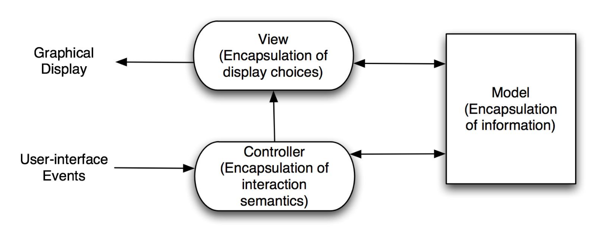
Sense-Compute-Control
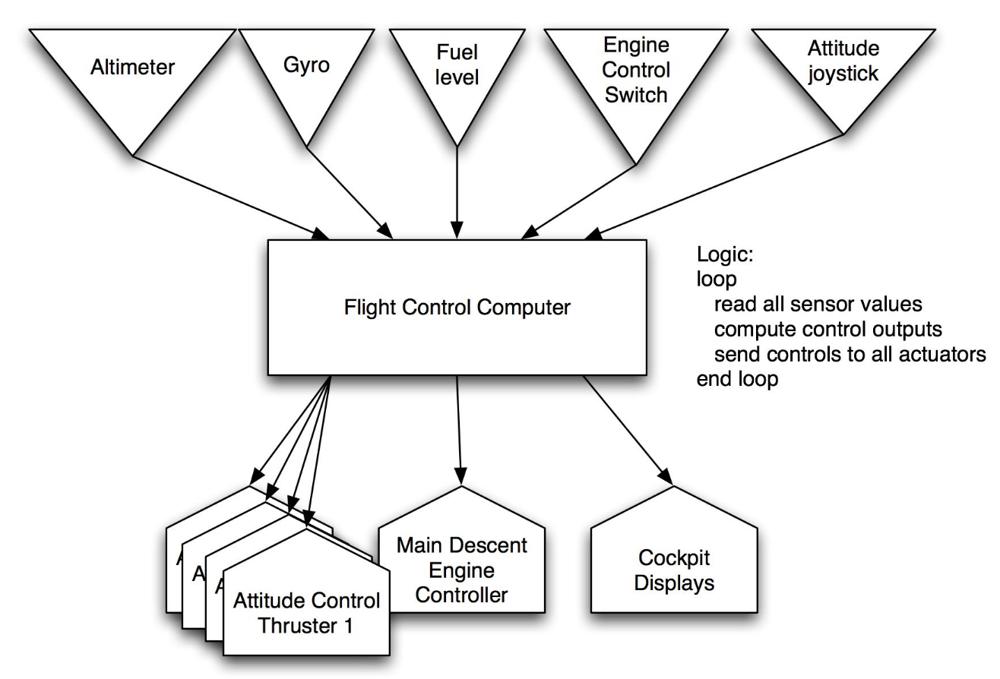
Architectural Styles
architectural styles: collection of architectural design decisions for a system that constrain further decisions about that system. It can be implemented with some subset of architectural patterns, and it will have its own design vocabulary in terms of custom components and connectors. We use them because:
- Design/code reuse
- Understandability of system through standardization (known invariants)
- Interoperability
- Style specific analyses are already known (advantages/disadvantages)
- Ways to visualize are already known
Properties of good architecture:
- Results in a consistent set of principled decisions
- Resilient to change
- Source of guidance through product lifetime
- Reuses established engineering knowledge
We rarely use only one unmodified (pure) architectural style in a system.
Taxonomy of architectural styles:
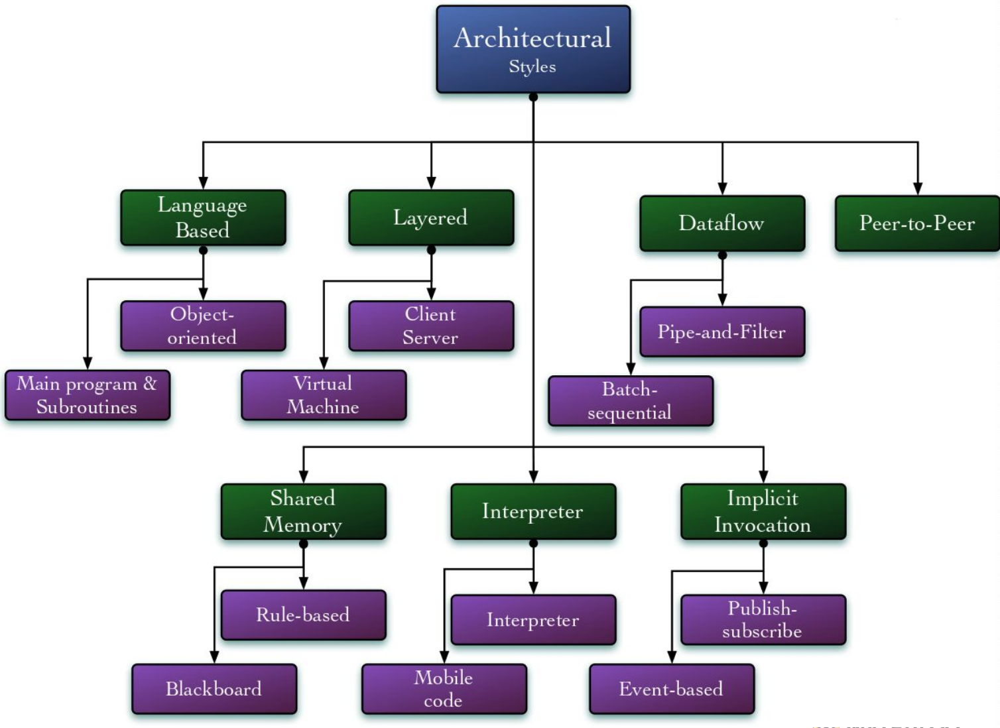
Layered Style
Has a hierarchical system organization, each layer acts as a server for layers above and a client for layers below. Connectors are thought of as protocols of layer interaction.
For instance, in a virtual machine, client software runs on an opaque layer of virtualized hardware.
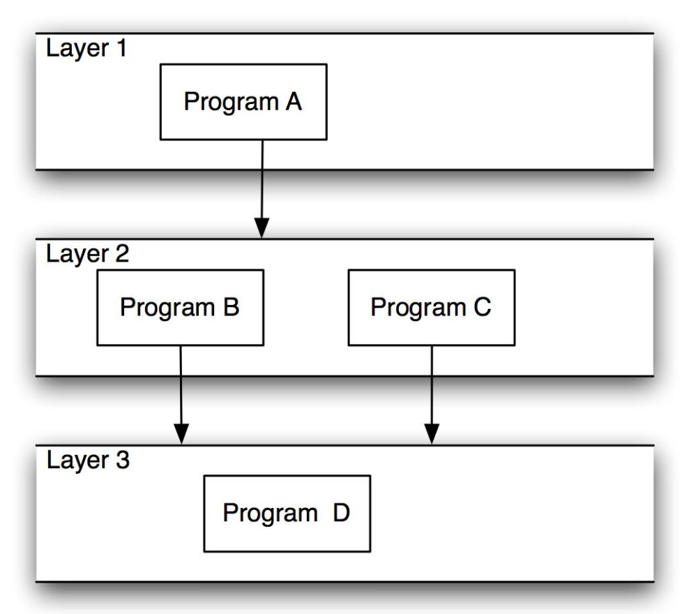
Advantages:
- Abstraction increases up the layers
- Evolvability
- Changes in a layer affect at most the adjacent two layers, so aids reuse
- Low coupling since a layer only interacts with layers above and below it
- Standardized layer interfaces
Disadvantages:
- Not universally applicable
- Performance (may force high level layers to be coupled with lower ones)
Client-Server Style
Layed architecture with only 2 layers, a client layer and a server layer. Servers don’t know the number of identity of clients, but clients know their server’s identity. Connectors are remote procedure calls on the network according to some protocol.
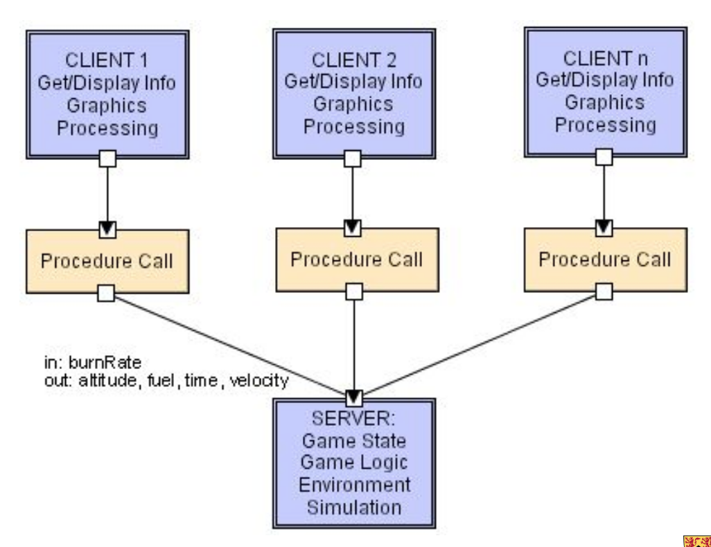
Advantages:
- Abstraction between servers and clients (servers don’t care about the state of the client)
- Redundancy in that new connections can easily be set up
- One change to a server can affect all of its clients (evolvability)
- Standardized protocol between servers and clients
- Ease in scaling
Disadvantages:
- Performance (server can become bottleneck)
- Easy point of attack at server
Data Flow Styles
Batch Sequential
Separate programs executed in order, data is passed as an aggregate from one to the next. THe connectors between programs is the physical process of loading the next program in (no concurrency, non-interactive). These systems are still used in transaction processing.
Pipe and Filter Style
Components are filters which do some transformation on their input stream and produce an output stream. Connectors are the pipes which allow the streams to travel from filter to filter. Each filter has no knowledge of other filters or their state. Examples include the unix shell (ls to grep), distributed systems, signal processing, compilers, and parallel programming.
3 variations on pipe and filter: bounded pipe (only allow a certain amount of data), pipelines (only linear), and typed pipes (only allow data of a certain type).
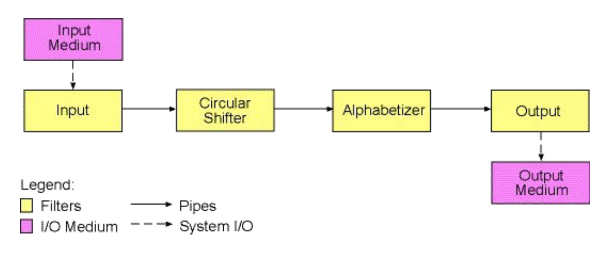
We might think of the pipe and filter style as a layered architecture turned sideways.
Advantages:
- Simple composition
- Reuse
- Prototyping
- Easy growth and evolution (evaluating for bottlenecks is easy)
- Filters can be easily re-implemented without affecting the rest of the system
- Concurrency and parallelism
Disadvantages
- Poor performance: each filter has to parse data, sharing global data is difficult
- Not appropriate for interaction
- Low fault tolerance threshold (e.g. what happens when a filter crashes)
- Data transformation to stream to accomodate filters
- Increases complexity and computation
Shared Memory
Blackboard
A central data structure (the blackboard) holds all state and controls the whole system. Components then operate on the blackboard. Connections are either active, as in incoming streams of transactions on a database, or passive as in changes on a blackboard trigger other processes. Examples of this include AI systems, integrated software environments, and compiler architecture (imagine stack).
Advantages:
- Efficient when dealing with large amounts of Data
- Clients are loosely coupled
Disadvantages:
- Data model is static, bounded by defined schema, resistant to change since many clients depend on it
- Difficult to distribute
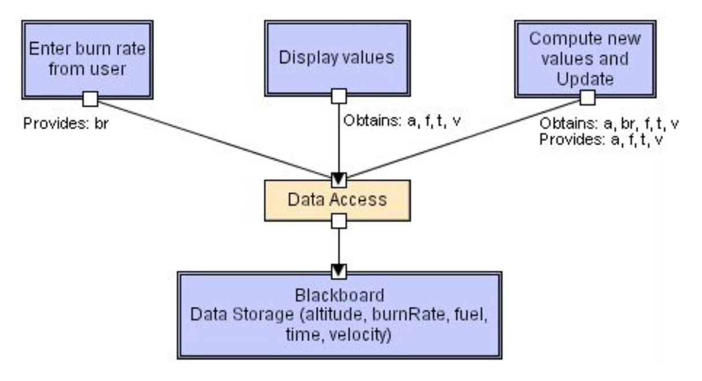
Rule-based style
An inference engine parses user input and determines whethere whether it’s a fact/rule or a query. If it’s fact/rule, it adds it into its knowledge base. If it’s a query, it looks for relevant rules to produce an fact for the query. This approach has many applications in artificial intelligence, since the rules approximate how humans think.
Thus, we can easily change the system by changing its rules. When there’s a large number of rules, they may conflict in the fact that they produce based on the facts/query given.
Advantages:
- Can easily build very flexible evolvable systems by changing rules
- Systems can be very lightweight and scalable
- We can use formal logic to verify coverage of rules
Disadvantages:
- It’s hard to come up with rules, we may run into conflicts
Interpreter
Interpreter style
Dynamically add to the set of commands possible in the system, good for end user programmability. Examples of this are LISP and Scheme. Suitable for applications in which the most appropriate language or machine for executing the solution is not directly available. Components are an interpretation engine, memory, and state. Connectors are procedure calls and directt memory access. Examples include programming language compilers and scripting languages.
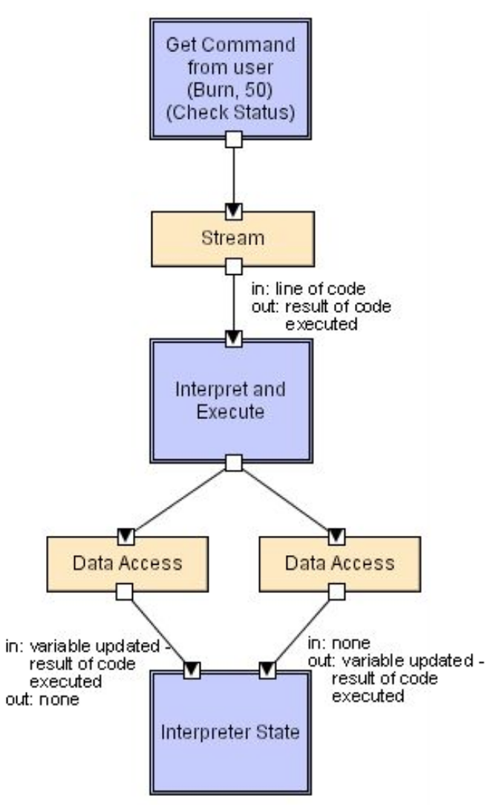
Advantages:
- High evolvability due to ability to add new capabailities dynamically
- Simulation of non-implemented parts
- Portability
Disadvantages:
- Can be slow due to computational complexity
Implicit Invocation
Method calls are explicit invocations. Triggering a registered listener’s handler with an event is an implicit invocation. Event broadcasters don’t know anything about the event consumers, the effects of the events, or the ordering of the events.
Publish-subscribe style
Components register for events, which are then published by different sources or by a centralized system e.g. news, fire alarms, MVC, IDEs, database systems, user interfaces
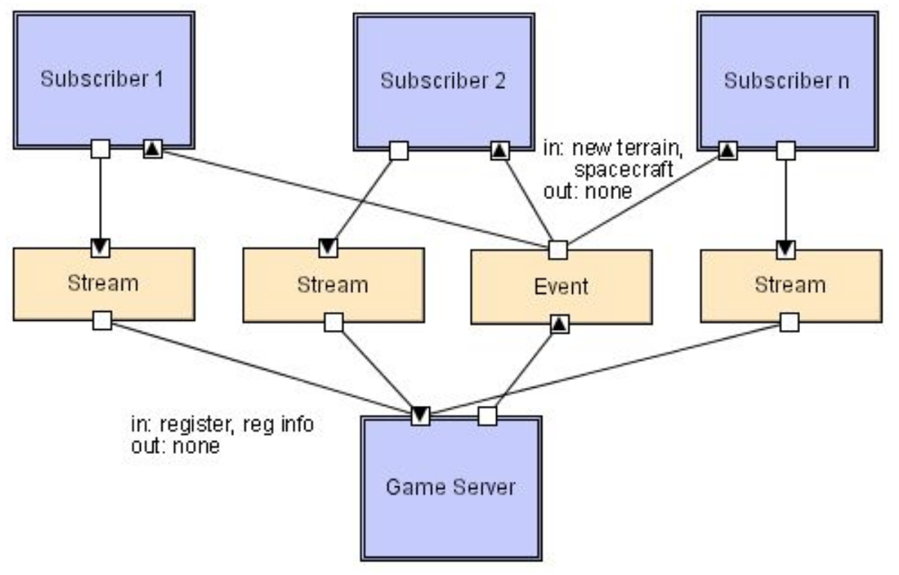
Event based style
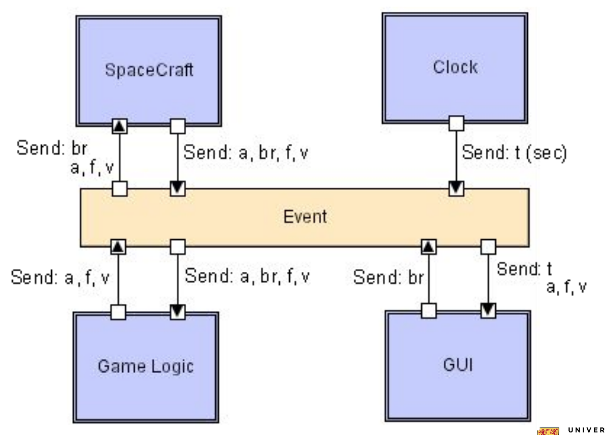
Advantages:
- Scalable, new listeners can just register themselves
- Minimal dependency and loose coupling, components can be added/removed, components don’t directly interact with each other
- Highly reusable, can easily reimplement without chaning interface
Disadvantages:
- Loss of execution control
- Data exchange has to be in terms of events, which has a hit on performance
- Hard to debug, as contracts between components are not formalized and any event can set off a chain of side effects
Peer-to-Peer Style
State and behaviour are distributed among peers which can act as either clients or servers. Each peer is a component with their own state. Connectors consist of network protocols and data elements are network messages. Skype used to have this sort of architecture.
Advantages:
- Hard to attack, since there’s no central server
- Arguably more secure/performant communication, again since no central server is involved
Disadvantages:
- Client machines are often much less reliable than a central server
Common Object Request Broker Arhcitecture (CORBA): allows for communication between systems deployed on different OS’s, programming languages, and hardware
CORBA places a different distributed object on each platform they’re trying to support. These objects can share data and invoke methods on other objects through a well-defined API. In CORBA, the components are the distributed objects, the connectors are the RPC invocations, and the data elements are the arguments to methods, return values, and exceptions.
If architectures use differing architectural styles, they’ll differ greatly. If they have the same architectural, style, they can still be different variations.
Design Recovery
To do design recovery, we can either do syntactic clustering or semantic clustering.
Syntactic Clustering
Static code analysis done without running the program. We can identify coupling and cohesion from descriptions of components, but we may miss some purely dynamic relationships e.g. exception handling.
Semantic Clustering
Use domain knowledge about the application and behavioural similarity of its entities to infer their meaning. We can verify that these inferred meanings are correct through executing the system on a representative set of inputs. This is tough to automate.
Greenfield Design
Sometimes, we just start over from scratch to find out what the architecture of the system should be without looking that much at the existing source code. To do this, we can look for analogies for the system in real life, brainstorm, search existing literature, create morphological charts (list all necessary functions and possible implementations) etc.
Architectural Styles 2
Reading assignment: Eclipse architecture
Reading assignment: LLVM architecture
Compiler architecture is generally organized as 3 phase design: a frontend for AST building, an optimizer, and a backend for machine code generation. These 3 sections are rarely separated cleanly due to implementation e.g. in GCC, the backend walks the frontend AST for debugging info, the frontend generate backend data strcutures, and global data structures are used throughout.
LLVM uses an intermediate representation (IR) which is a step above machine code. Front end produces IR, the optimizer optimizes IR ot better IR through multiple passes, and the backend converts IR to machine code in multiple passes. We can configure which passes are done for a specific compilation case e.g. not many registers available.
The backend uses target description
.tdfiles to describe specific properties about the target being compiled to e.g. a list of all 16 32-bit registers available. We can augment this information with C++ code specific to the architecture e.g. for handling x87 floating point stack.LLVM IR can be (de)serialized into a binary format called LLVM bitcode. Serializing to bitcode at an intermediate step rather than creating object code right away allows us to delay code generation to link time or even install time to get better optimizations.
LLVM IR is much easier to unit test because you can load LLVM IR specific to the piece of the compiler that is broken, rather than create a
.cfile which runs through the whole compiler in an effort to test one crashing optimizer. To find which optimizer is offending, you can use the LLVM BugPoint tool which reduces a list of crashing optimizers and input to a minimum test case.
Example Exam Question
Consider a development environment capable of integrating a set of tools (e.g., compiler, editor, debugger, etc.) produced by different vendors. What is the architectural style most appropraite for the system? Give a sketch of the system and explain the interaction between parts of the architecture. Give one advantage and one disadvantage of the given choice.
The architectural style most suitable would be the layered virtual machine architectural style. The editor and the debugger would both be layers on top of the compiler layer, and would use the compiler as a blackbox on top of which they can call functions. One advantage of this is that it is a very decoupled design, which is advantageous since there are multiple vendors. One disadvantage may be the performance, which can be impacted as we get higher and higher level tools.
Architectural modelling
architectural model: artifact that captures the documented design decisions in a system’s architecture
architectural modelling notation: language/means used by an architectural model
Stakeholders in the system have to determine what should be modelled, at what level of detail, and with how much rigor. They should do a cost-benefit analysis on what to model.
Things we can model:
- Basic architectural elements
- Components
- Connectors
- Interfaces
- Configurations
- Rationale (reason behind decisions)
- Elements of architectural style
- Specific basic architectural elements relevant to the style
- Component, connector, interface types
- Constraints on interactions, behavioural constraints, concurrency constraints
- Static and Dynamic aspects
- Static aspects of a system don’t change as the system runs e.g. logical topologies, deployment map
- Dynamic aspects of the system change as the system runs e.g. state of individual componetns or connectors, state of a data flow through the system
- Functional and non-functional aspects of a system
We should consider a model’s ambiguity, accuracy, and precision.
view: subset of a architectural model according to a viewpoint, which is a set of criteria that restrict the design decisions captured in the view e.g. logical, physical, deployment, concurrency, behavioural
We use several views from different viewpoints to capture a single model, because using one large view would be infeasible and impractical.
Views can contain overlapping and related design decisions. If decision decisions presented by 1 view conflict with those of another view, those two views are inconsistent. Otherwise, they’re consistent.
Types of inconsistencies:
- direct inconsistencies e.g. the system runs on 2 hosts vs. the system runs on 3 hosts
- refinement inconsistencies, meaning the high level and the low level views of the same parts of a system conflict
- static (topology) or dynamic (behaviour) aspects inconsistencies, e.g. different description of system behaviour in 2 different views, different topologies described in 2 different views
- functional or non-functional inconsistencies
Sometimes, inconsistencies are OK, but most of the the time, it means there’s some problem with your system.
To evaluate a modelling approach, consider:
- Scope and purpose, what is modelled (or not modelled) by the approach?
- Basic elements of the model
- Style, how well the model fits with the underlying architectural style
- Static/dynamic aspects
- Dynamic modelling, how the model change as the system changes
- Non-functional aspects
- Ambiguity
- Accuracy
- Precision
- Viewpoints
- Viewpoint consistency
Approaches to modelling:
- Generic approaches e.g. natural language, powerpoint, UML
- Early architecture description languages e.g. Darwin, Rapide, Wright
- Domain/style specific languages e.g. Koala, Weave, AADL
- Extensible architecture description languages e.g. Acme, ADML, xADL
Unified Modelling Language (UML): widespread notations for modelling static and dynamic aspects of systems
Static aspect views in UML:
-
Component diagrams

-
Deployment diagrams

-
Class diagrams

Dynamic aspect views in UML:
-
Sequence diagrams

-
Use case diagrams

-
State machine diagrams

Advangtages of UML:
- Support for many viewpoints relevant to software engineering
- Ubiquity improves comprehensibility, extensive documentation and tool support
Disadvantages of UML:
- Very ambiguous if not enough detail is given
- Difficult to assess consistency between views
- Difficult to capture new concepts or views
Security and Chrome
security: maintaining integrity (only authorized modifications), availability (accessible by authorized parties), and confidentiality (prevent access/knowledge from unauthorized parties) of system resources (hardware, software, firmware, data, communications etc.)
Design principles for security:
- Least privilege: give each component only the privileges it requires
- Fail-safe defaults: deny access if explicit permission is absent
- Economy of mechanism: adopt simple security mechanisms
- Complete mediation: ensure every access is permitted
- Open design: do not rely on secrecy for security
- Separation of privilege: introduce multiple parties with differing privileges
- Least common mechanism: limit critical resource sharing to only a few mechanisms
- Psychological acceptability: make security mechanisms usable
- Defense in depth: have multiple layers of countermeasures
Architectural Access Control Models
discretionary access control: allow access to a resource based on the resource, the identity of the requestor, and whether the requestor has permission
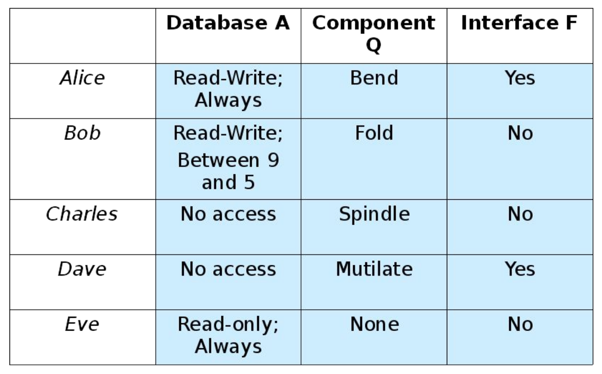
mandatory access control: define policies for resource accesss, i.e. users have classification hierarchy which correspond to resource classification hierarchy
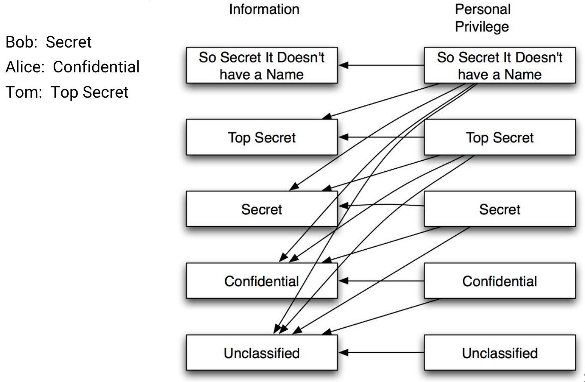
Types of attacks
- Impersonation of an authorized user
- Fradulent actions e.g. seller does not ship items bought
- Misrepresentation, delegitimize an authorized user
- Collusion, delegitimize an authorized user as a part of group
- Addition of users who have no information on other users in the system, where existing users on the system also don’t know about them
trust: the probability that an agent A asseses that another agent B will perform a particular action before A can monitor that action and in a context where it affects the actions of A i.e. A trusts B to do X in matters Y
reputation: expectation about entity’s future behaviour based on its past behaviour
Reading assignment: Browser security in Chrome
Reading assignment: Security architecture of the Chromium Browser
Chrome deals accesses insecure online content that can compromise:
- confidentiality: leak user data
- integrity: read/write arbitrary data on disk
- availability: crash Chrome application or OS
Chrome relies on least privilege, separation of privilege, and defence in depth. They sandbox to reduce severity of vulnerabilities, auto-update to reduce window of vulnerability, and warn about malicious sites before accessing them to reduce frequency of exposure to attacks.
Chrome architecture:
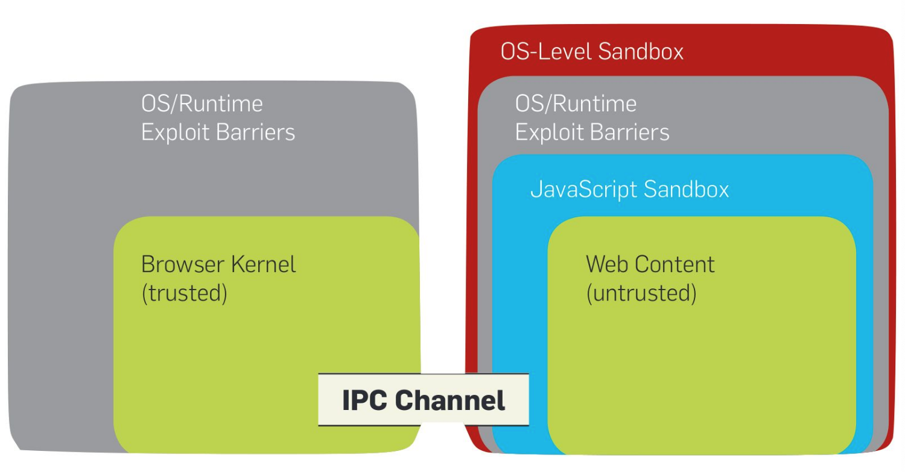
Design Introduction
Analysis models an existing system to deal with its functional challenges, while design creates a model to implement a new system to deal with its implementation challenges. The design of a system maps responsibilities to objects.
Design process loop:
- Build
- Measure
- Learn
We want to reuse designs in order to use previous experience and promote: abstraction, flexibility, modularity, and elegance.
We have to consider dynamic behaviour as well static relationships from examining just the code. As we increase abstraction, we have less control over the behaviour of the system.
Design Principles
Don’t be STUPID, be SOLID.
STUPID:
- Singleton
- Tight coupling
- Untestable
- Premature Optimization
- Indescriptive naming
- Duplicates
SOLID
- Single reponsibility prinicple
- Open/closed principle: classes should be open for extension but closed to modification
- Liskov Substitution Principle: subtypes should behave as their parent types, meaning 2 different subtypes should be interchangeable when used as their common supertype
- Interface Segregation: only place key methods in interfaces
- Dependency Inversion Principle: higher level methods should not depend on lower level modules
Lower level principles:
- Encapsulate what varies
- Program to abstractions not implementations
- Favour composition over inheirtance (enables runtime bheaviour changes and makes code easier to evolve in the future)
- Strive for loose coupling
Quality attributes:
-
Simplicity: Don’t Repeat Yourself (DRY), Keep it Simple, Stupid (KISS)
-
Coupling, types of coupling on a scale
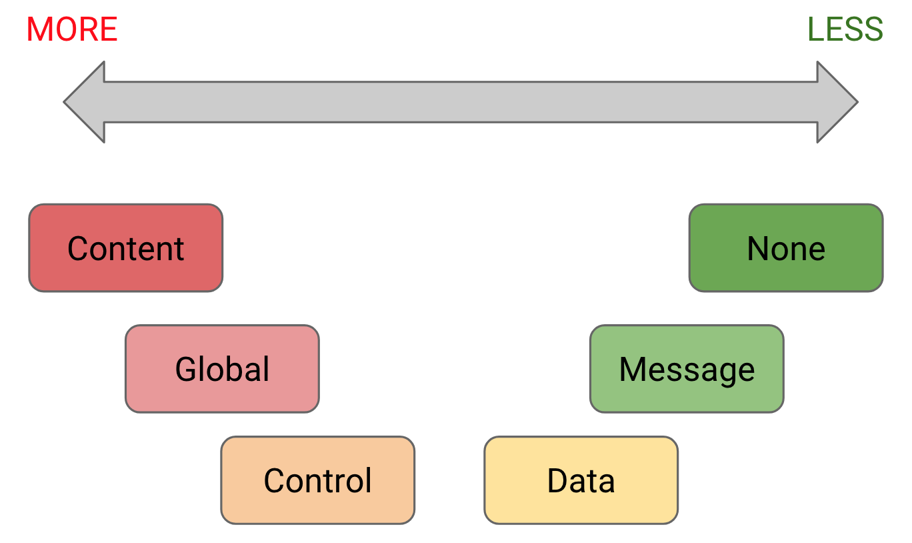
-
Cohesion, types of cohesion on a scale
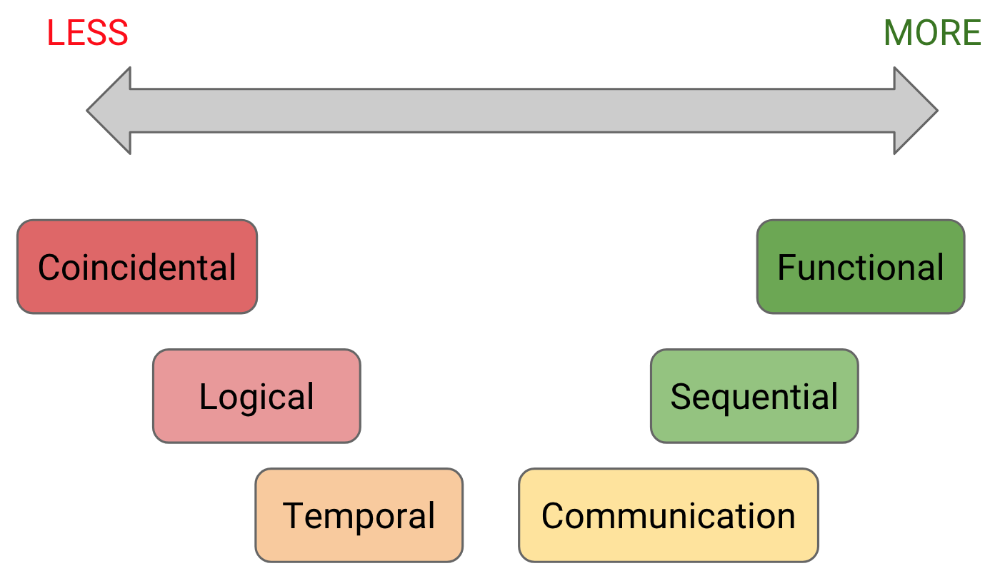
There is incoherency in an operation if it has too many “and” clauses (temporal cohesion, logical cohesion), and if it has too many “if…then…else” clauses (control coupling, coincidental cohesion, logical cohesion).
Cognitive dimensions:
- premature commitment: decision made with insufficient data that constrains future choices
- hidden dependencies
- secondary notation: non-obvious relationships may be meaningful or provide context
- viscosity: reistance to change
We want design patterns for the same reasons as we wanted architectural styles:
- Ease communication with a shared vocabulary
- Leverage existing design knowledge
- Enhance flexibility for future change
- Increase reusability of developed code
design patterns: common solutions to recurring design problems (will have tradeoffs). They describe a class/object with well defined dependencies, structures, interactions, and convensions. They’re language independent and can be considered micro-architectures.
Design Patterns
Creational Patterns
Ways to encapsulate construction logic for and defer class instantiation until runtime
Singleton Pattern
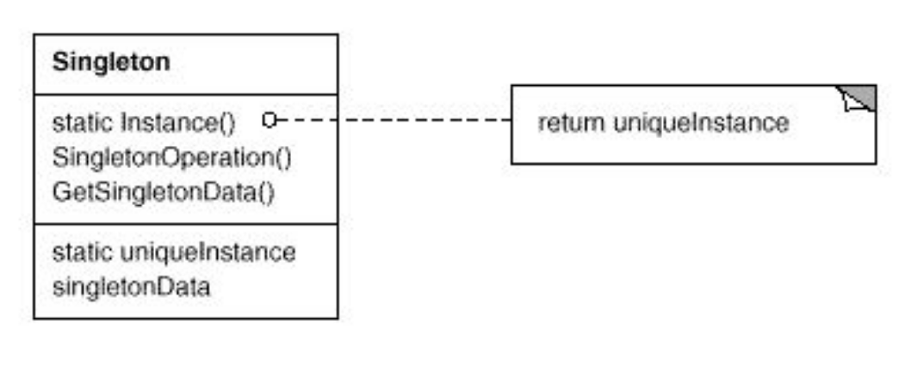
class Singleton {
private static Singleton instance;
private Singleton() {}
static Singleton create() {
if (instance == null) {
instance = new Singleton();
}
return instance;
}
}
Factory Pattern
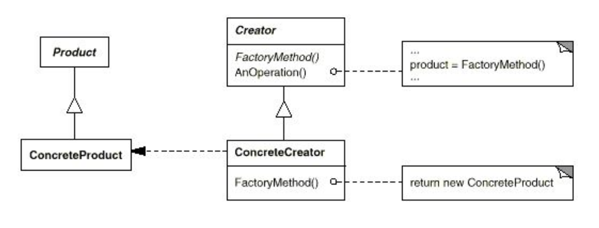
Abstract Factory Pattern
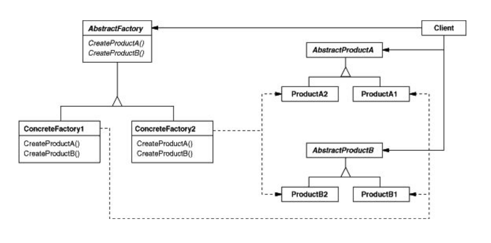
Builder Pattern

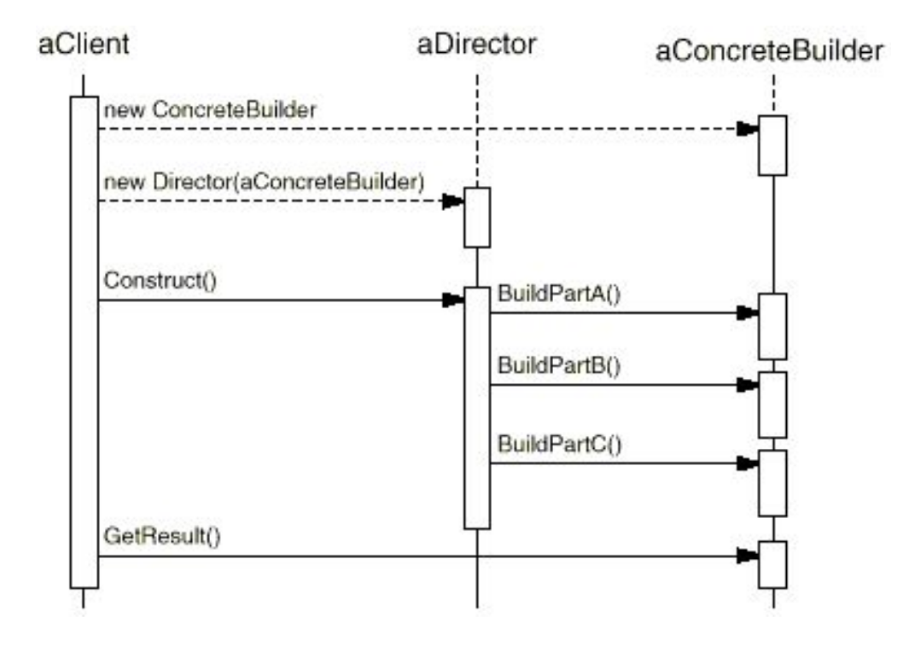
Prototype Pattern
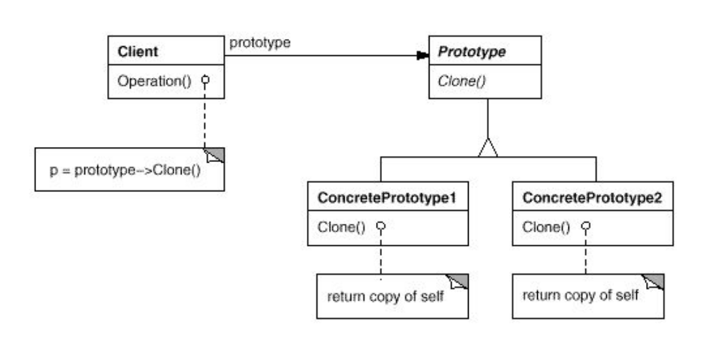
Structural patterns
Ways to make the relationships between entities more flexible
Class Adpater Pattern
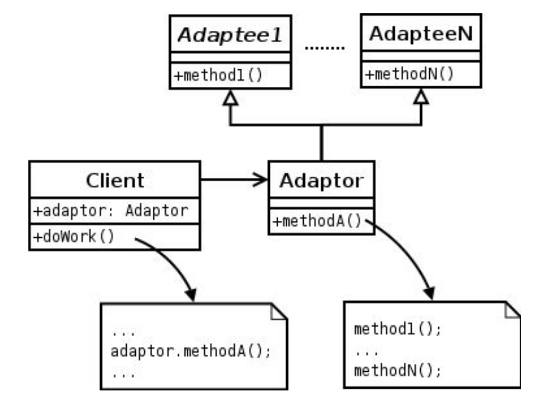
Object Adapter Pattern
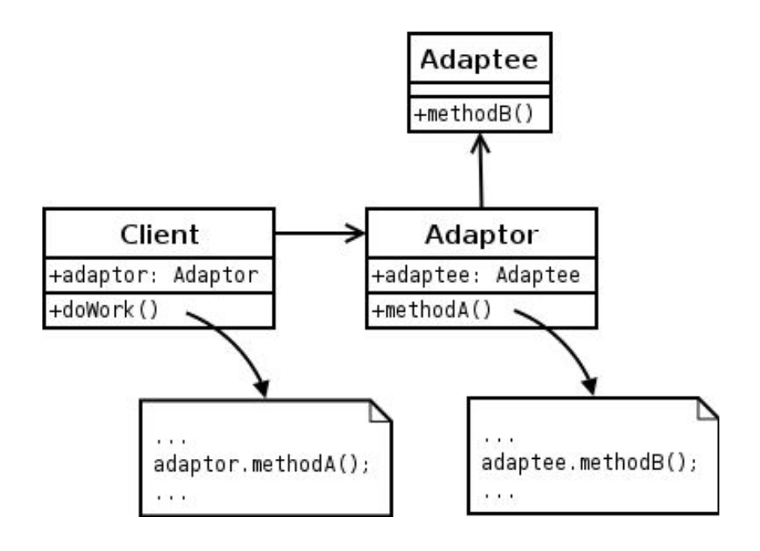
Bridge Pattern
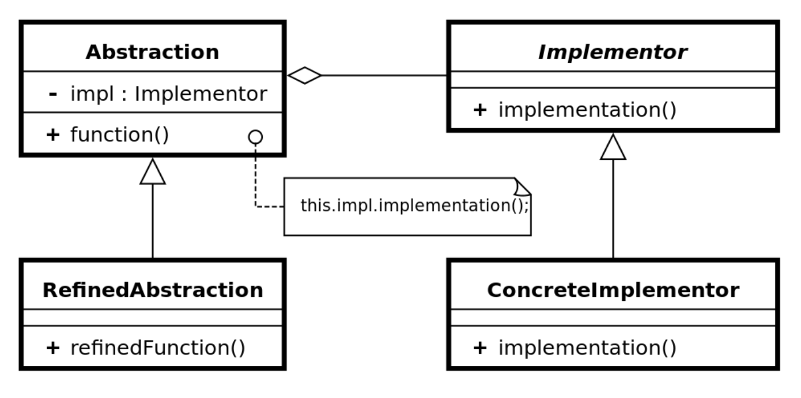
Decorator Pattern
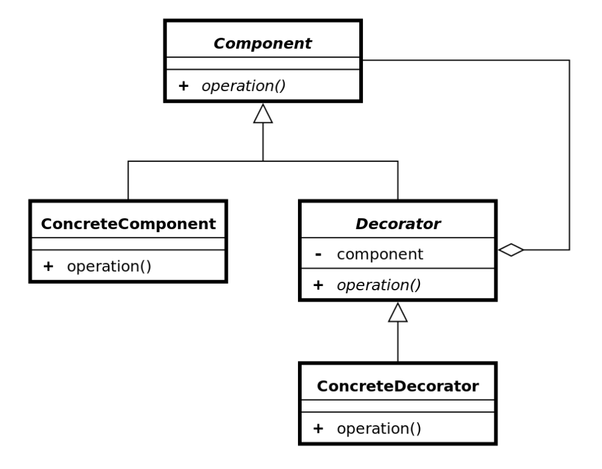
Facade Pattern
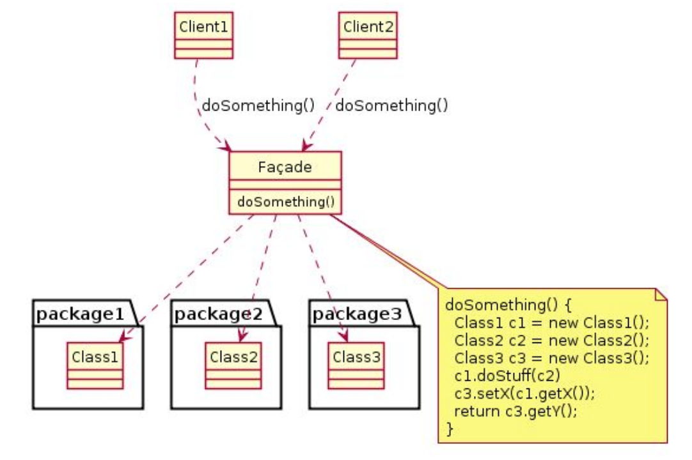
Proxy Pattern
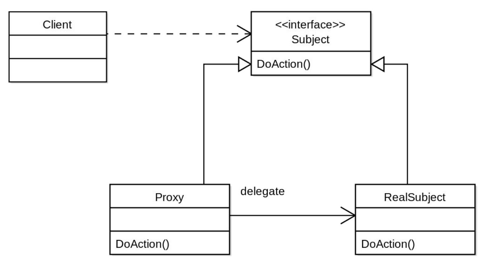
Composite Pattern
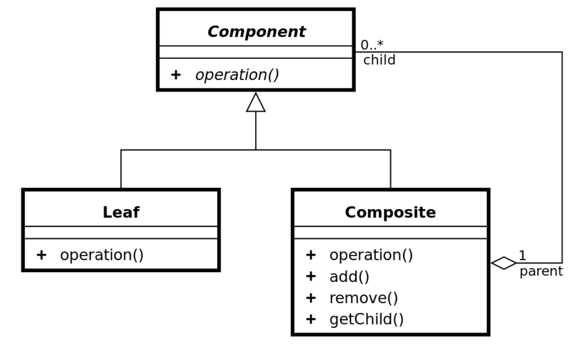
Flyweight Design Pattern
If you have a lot of objects with the same unchanging internal state, you can create a Flyweight class encapsulating that state which all the objects can then share. You can also create a Factory that dispenses a particular Flyweight you need for an object. This saves on memory.
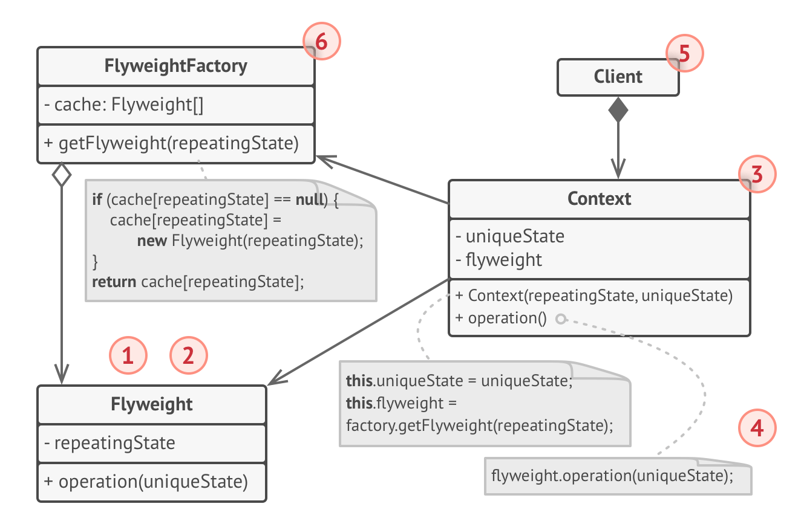
Design Patterns 2
Behavioural Patterns
Identify common communication patterns between objects and make them more flexible
Visitor Pattern
Because Elements visited can be polymorphic (i.e. we have to call different visit methods on them), we do a double dispatch, meaning we make the accept method on each element call the correct visit implementation on the Visitor object it is passed.
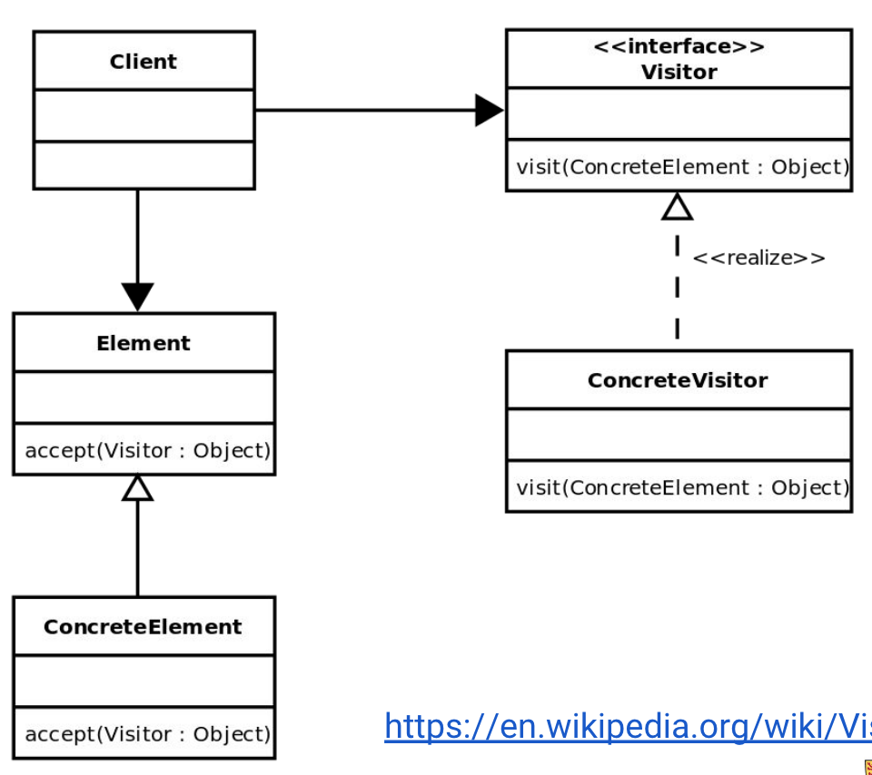
Observer Pattern
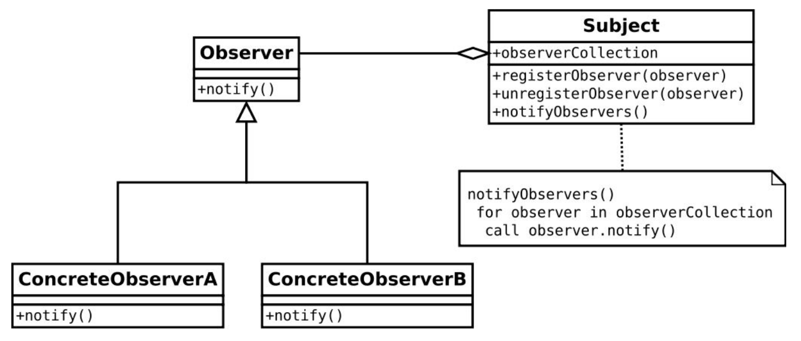
Interpreter pattern
Implement a specialized computer language to rapidly solve a specific set of problems